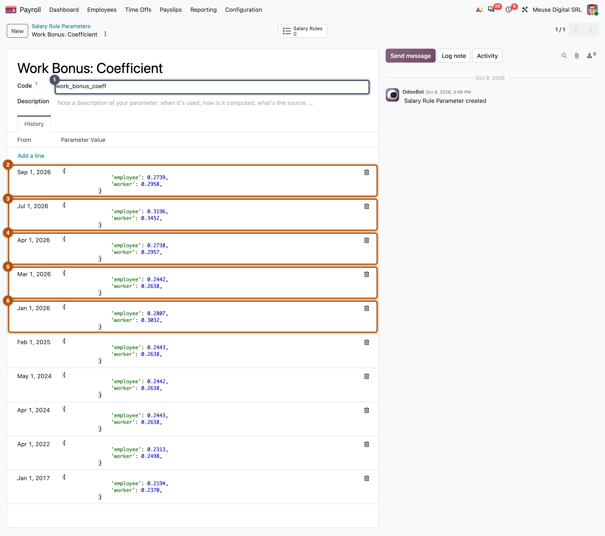
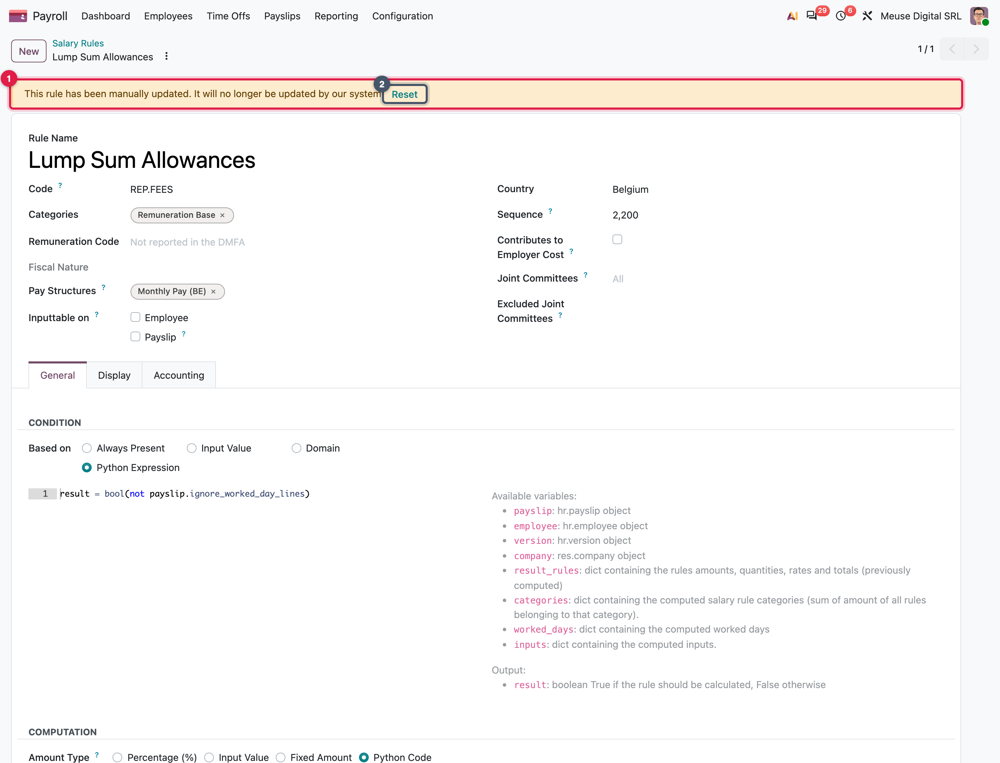

Parameters, updates and safe extensions
Dated legal values, how Odoo's fixes reach every customer, what to do when data is not enough, and how to prove the result
- Explain a rule parameter and predict which value a payslip reads
- Decide where a value belongs: parameter, company setting, version field or rule
- Explain how country updates reach customers, and what happens to a record the customer edited
- Choose the lightest extension when data is not enough
- Prove a localization works with golden payslips frozen as tests
On 1 January the minimum wage, a tax scale and a contribution cap change. Nobody touches a rule. Odoo adds three dated values to the country's data, every customer database receives them within a week, and the first January payslip reads them, while a December payslip recomputed in February still reads December's law. This chapter shows how, and what to do when the law asks for more than a new number.
What a rule parameter is
A rule parameter is a code with a list of dated values: a rate, a cap, a tax scale, each valid from a date until the next value starts. A rule never contains the number itself; it asks for the parameter by its code, and the payslip gets the value valid on its own date. Next year's law is a new value, never an edit.
Three things follow:
- History is kept. Old values stay, so any past payslip recomputes with the law of its period (Chapter 11).
- A value has a start date only. It lasts until the next one; a temporary measure is two values, the measure and the return to normal.
- A value can be any shape the rule needs: a number, a list of brackets, a table per frequency. Keep the same shape every year, so the rule never needs to know the year.
(1–30 June)
reads 1,300
An illustrative parameter minimum_wage with five values. The June 2024 payslip asks for it:
payslip._rule_parameter('minimum_wage') # 1300
The rule is simple: the value with the latest start date on or before the payslip's end date. For June 2024 that is the value of 1 January 2024. Note the 2023 value is lower than 2022's: values follow the law, not a trend, and nobody edits the old ones to "fix" them.
Belgium's cap on the flat-rate professional expenses works exactly like this: 5,930 € from 1 January 2025, 6,070 € from 1 January 2026. Mélanie's February 2026 payslip reads 6,070; a December 2025 payslip recomputed today still reads 5,930.

Common pitfall: a period that straddles a date
One value applies to the whole payslip, read at its end date. A weekly payslip from 29 June to 5 July reads the July value for the whole week. When the law requires splitting, the rule must ask twice, with two reference dates, and prorate.
Where a value belongs
Not every number is a parameter. Ask who decides it, and for whom.
The last column is the subtle one: rules are not dated. Change a rule and every payslip you recompute afterwards uses the new method, including old ones. So a rule should be written to be valid for every year it supports, and everything that changes by year must sit in a parameter it reads.
How updates reach customers
Country data is not frozen at installation. Odoo keeps improving it, and delivers it without a module upgrade.
Why the protection? A customer may have a reason to change what a rule computes, and a weekly reload must not silently undo it. So when a user edits a shipped rule's computation (its code, condition, amount, categories, structures or sequence; not its label), or edits a shipped parameter, Odoo marks the record and stops updating it. Time types are protected the same way. Records the customer created from scratch are never touched by the update.

Worked example: a customer patches a cap
MyVidangeCompany's payroll officer thinks the 2026 professional-expenses cap is wrong and edits it "until Odoo fixes it". The parameter is now flagged. When Odoo ships the 2027 value, the weekly job skips this parameter: January 2027 payslips silently keep reading the 2026 cap. The right move was to report the value; once the record is flagged, Reset brings back Odoo's values and the updates.
In practice
In a review or a support case, search the rules and parameters flagged as manually updated. Each one is a place where the customer stopped receiving the law's changes. Ask why; if the reason is gone, reset it. If the customer needs a different computation for good, a rule of their own next to the standard one is easier to maintain than an edited standard rule.
When data is not enough
Most of a localization is data: parameters, rules, categories, time types, warnings. Sometimes the law needs more. Climb the ladder only as far as needed.
Each rung is harder to change and to review than the one above. A record can be changed by a payroll expert and is delivered by the weekly job; a helper or a hook needs a developer and a code release. Rung 4 always starts with a country guard, because one database can hold a Belgian and a Mexican company:
def _get_payslip_line_total(self, amount, quantity, rate, rule):
total = super()._get_payslip_line_total(amount, quantity, rate, rule)
if self.company_id.country_id.code != 'BE':
return total
return float_round(total, precision_rounding=0.01, rounding_method='HALF-UP')
Belgium's line rounding: other countries get the standard total untouched. Chapter 22 lists the few hooks a new localization actually needs.
Key idea
Before writing Python, ask: "could a payroll officer need to change this next year?" If yes (a rate, a cap, a list of codes), it belongs in a record.
Proving it works
A payslip can be wrong by one cent for years before anyone notices. The proof is a set of golden payslips (Chapter 10): payslips computed independently of Odoo, from the law and the administration's examples, and frozen as automated tests. Each test sets up an employee, computes a payslip for a period, and compares every line with the expected amount:
def test_standard_month(self):
payslip = self._generate_payslip(date(2026, 2, 1), date(2026, 2, 28))
self._validate_payslip(payslip, {
'BASIC': 4000.0, 'ONSS': -522.80, 'GROSS': 3477.20,
'P.P': -826.69, 'NET': 2614.27,
})
Illustrative, with Mélanie's February 2026 values. The tests run on every change to the module, so a fix for one case cannot silently break another.
| Write a test… | Because | Case study |
|---|---|---|
| per situation the law distinguishes | each one takes a different path through the rules | Mélanie (standard), Jurgen (low wage), Marie (car, family) |
| per special time | absences, joiners and overtime hide bugs better than arithmetic | Yannick joins on 12 March; Jurgen's April |
| per extra structure | each kind of payslip has its own rules | Emma's exit payslips |
| on both sides of every date change | proves the new value starts on the right day, and the old one still applies before | Jurgen's low-wage threshold, March and April 2026 |
| above every cap and in the top bracket | a cap that is never reached is never tested | Marie |
Tests run on fixed dates, so a test of 2025 keeps checking the 2025 law forever. When you add next year's values, keep the old tests unchanged: if one fails, an old value was edited instead of a new one added. And break the module on purpose once (multiply a cap by ten): if no test fails, the suite has a hole.
Common pitfall: expected values copied from Odoo
A test whose expected amounts were produced by the code it tests proves nothing about the law; it can only detect a change. The first expected value of each case must come from an independent calculation, with its source in a comment.
Around the world
- Mexico reads the UMA and the tax tables from dated parameters, with one table per pay frequency.
- Belgium downloads social-security rates every day into dated parameters, one per employer class and worker type.
- Switzerland imports tax tariffs from official files through a wizard.
- United States builds a parameter code per state for unemployment insurance rates, so a new state is a new parameter, not new code.
Review checklist
- New values are added, not edited. Each yearly change is a new dated value; old values and old tests are untouched.
- Every legal number is a parameter, with a code prefixed by the country (
l10n_xx_…): codes are shared by all countries. - Customer edits are known: rules and parameters flagged as manually updated are listed and justified.
- Code is guarded by country, and sits on the lightest rung of the ladder that works.
- A test per new case: each new situation, structure or dated value comes with a golden payslip, on both sides of its date.
Summary
- A rule parameter is a code with dated values; a payslip reads the value with the latest start date on or before its end date. Next year's law is a new value, never an edit.
- Law goes in parameters, the employer's choices in company settings, the person's facts on the version, the method in rules. Rules are not dated.
- A weekly job reloads every country's payroll data, so new values and fixes arrive without an upgrade; a record the customer edited is flagged and skipped until Reset.
- When data is not enough, climb the ladder: record, version field, helper, country-guarded hook; never patch the engine for one country.
- Golden payslips frozen as tests are the proof: one per legal situation, per structure, on both sides of every date, above every cap.